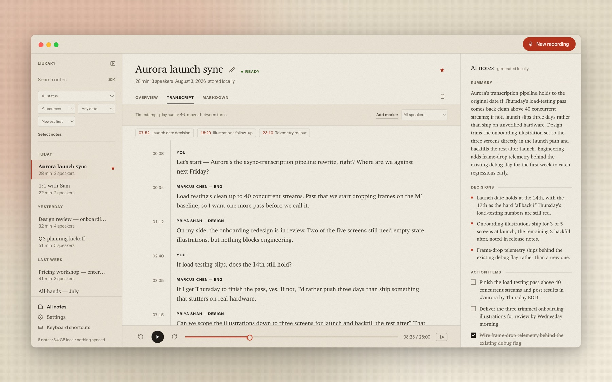
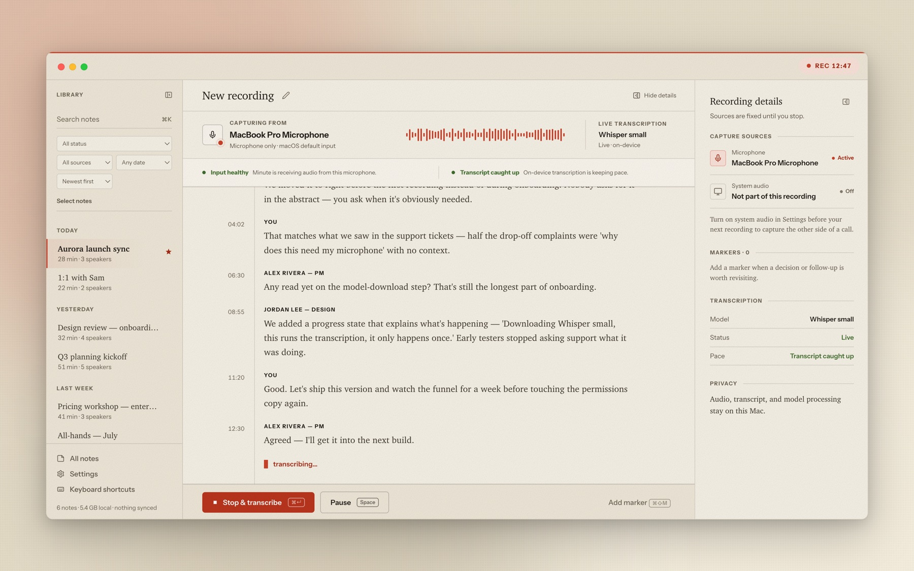
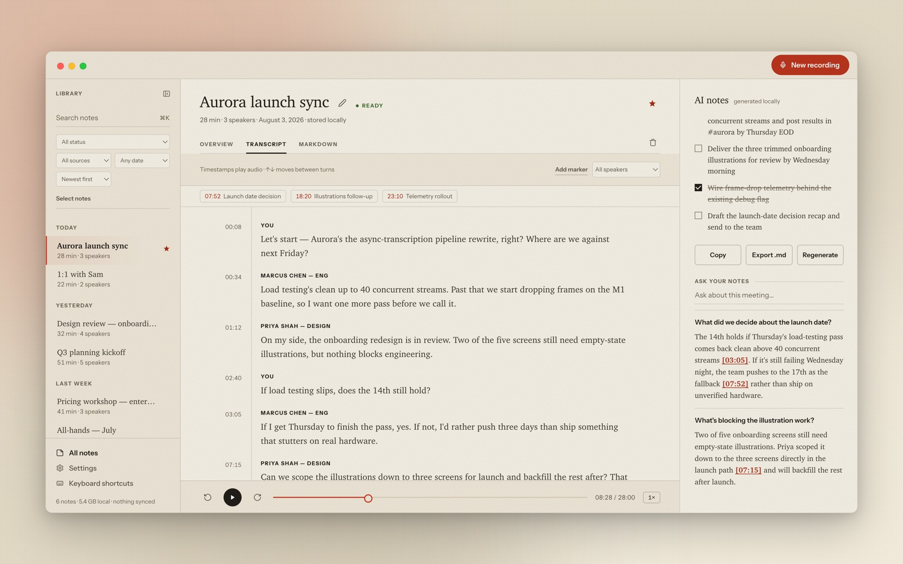
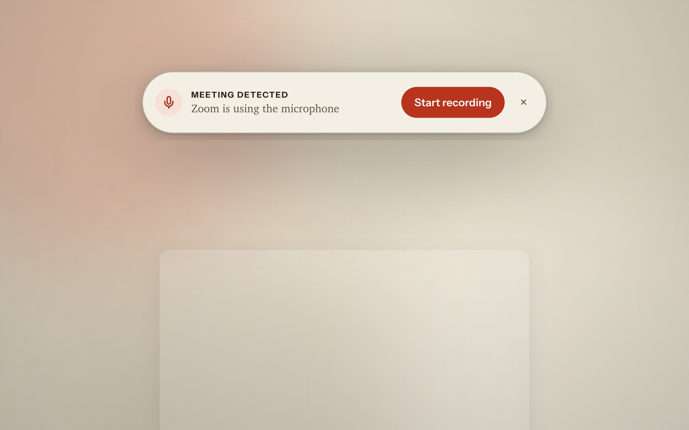
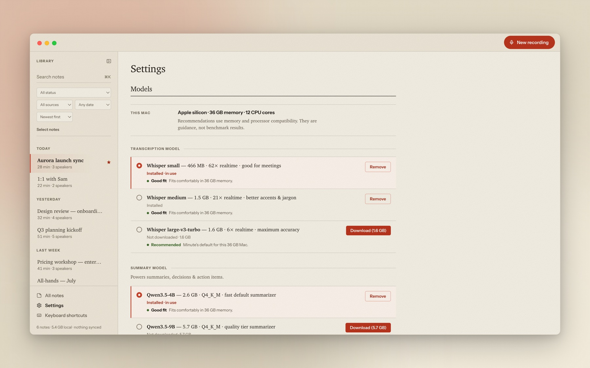
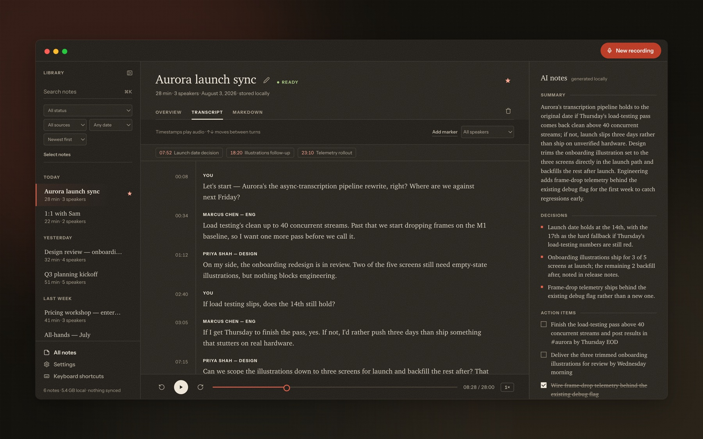

New recording · transcribed by Minute, on this Mac
Meeting notes that never leave your Mac.
Minute records your meetings, transcribes them as you speak, labels who said what, and writes the summary, decisions, and action items — with models that run on your Mac, not somebody else's server.

The part everyone asks first.
Where does the audio go when I hit record?
A folder on your disk. Audio, transcript, and summary are plain files — text and WAV — that open without me. Delete the app and your notes are still yours.
And the transcription? The AI summaries?
Whisper and a local LLM, running in-process on your Mac's own silicon. Turn off Wi-Fi and record — everything works exactly the same, because none of it ever used the network.
That's the whole ledger. The code is open — you can check.
Transcribed as you speak, every speaker labeled.
On-device Whisper keeps pace with the conversation, and fully local diarization works out who said what — so the transcript reads like a conversation, not a wall of text. Timestamps play the audio; the margin is the seek bar.

Answers with receipts.
What did we decide about the launch date?
The 14th holds if Thursday's load-testing pass comes back clean [03:05]; otherwise the team pushes to the 17th as the fallback [07:52] — every claim cited to the second it was said, computed locally like everything else.

A call starts. One click and it's on the record.
When Zoom, Teams, or a browser call starts using your mic, a quiet pill appears — one click starts recording. It watches device state, never audio, and it's off by default.

Your hardware. Your models. Pick the brains.
Choose your Whisper size and summary model with honest recommendations for your Mac's memory — guidance, not benchmarks. Metal-accelerated, offline after the download.

Native, not wrapped.
No Electron, no Python runtime, no Docker sidecar. A Rust app with whisper.cpp and llama.cpp compiled in, running on Metal — signed and notarized by Apple, updating itself from GitHub releases.

Your meetings are yours. Keep them that way.